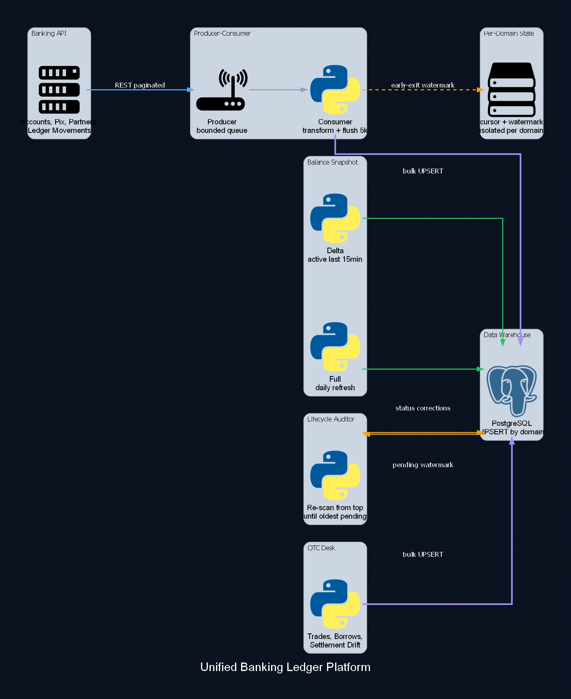

Unified Banking Ledger Platform
A platform that merged two separate financial pipelines, banking/PIX and ledger reconciliation, into a single system running every minute, persistent and orchestrated. Every data domain, accounts, PIX keys, PIX transactions, partners, ledger movements, OTC desk, gets its own producer-consumer queue, its own isolated cursor and watermark, and flushes in batches of 5,000 records straight to the database. Endpoints with no native delta filter use early-exit: they read from the top and stop on their own once N consecutive pages have already crossed the saved watermark, with no need to re-scan the entire history on every run. Partner balances run on two strategies, a 15-minute delta for whoever moved recently and a daily full refresh for everyone else. A separate lifecycle auditor fixes PIX transaction status that changes after capture, without re-scanning anything beyond what's needed.

Case Study
Problem
Two financial systems grew apart, each with its own checkpoint model, and needed to become one without losing what already worked. Most endpoints have no native date filter, so capturing only what's new means reading from the start and guessing where to stop, or reprocessing everything, every minute, forever.
Solution
Every domain runs isolated, with its own cursor and its own watermark, so a failure in one "drawer" never blocks the others. For an endpoint with no date filter, reading starts from the top and stops on its own once N consecutive pages land on a date already covered before (watermark early-exit), avoiding both a full reprocess and stopping too early and losing a record. Partner balances run at two speeds: a 15-minute delta for whoever moved recently, a daily full refresh to close out the rest. A separate auditor covers the case neither strategy solves alone, a transaction already captured that changes status later, reading only from the oldest one still pending and upserting whatever changed.
Impact
Two pipelines became a single platform, covering banking, PIX, partners, ledger and the OTC desk (including operational and settlement risk monitoring), running persistently every minute with no manual reprocessing. Per-domain state means adding a new lane never risks the ones already running.
Have a similar case? Let's design the architecture that proves the outcome in your context.
Discuss your case